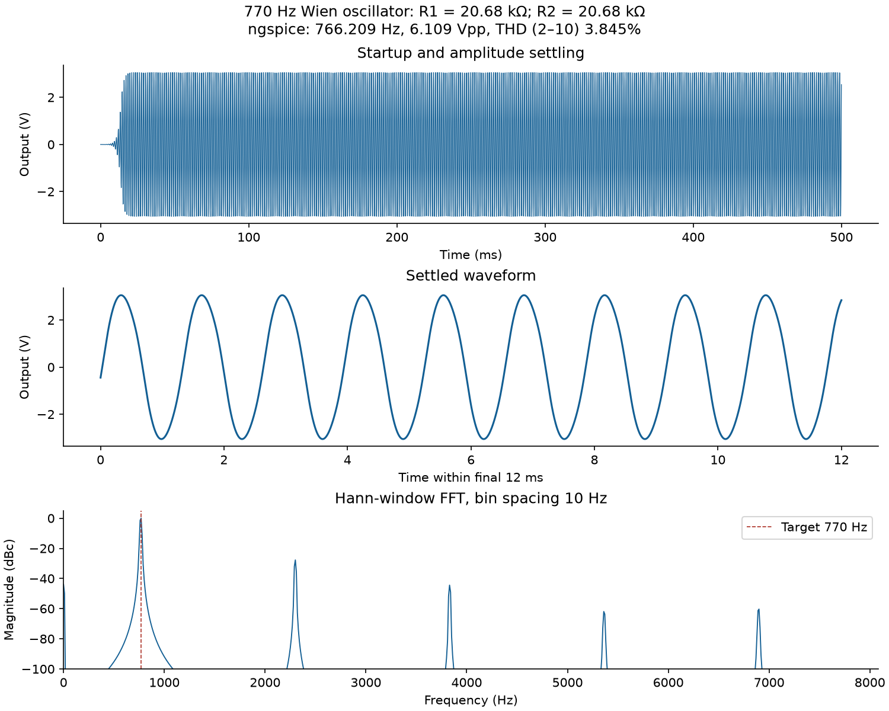
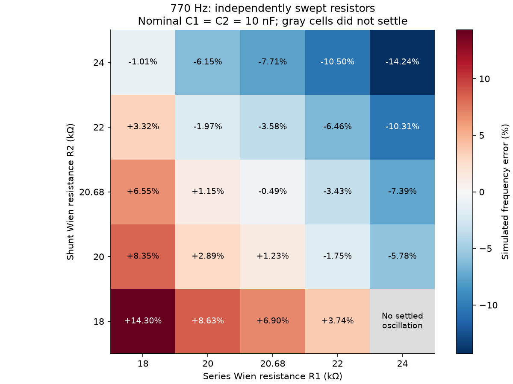
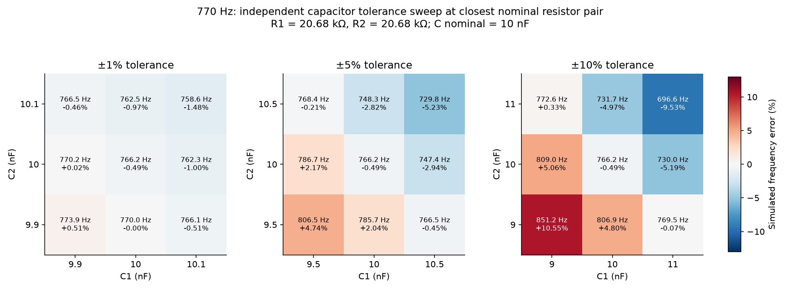
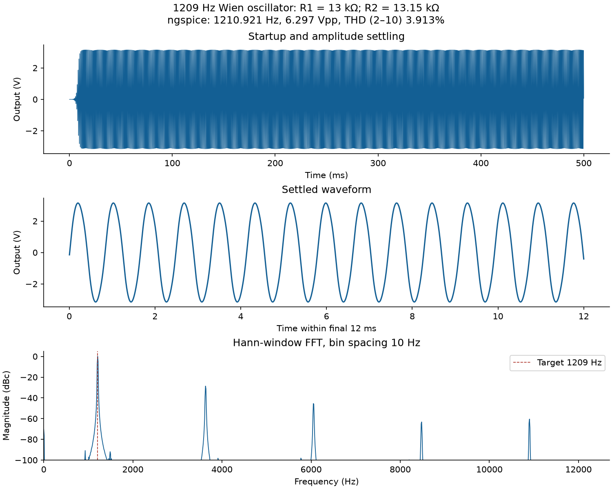
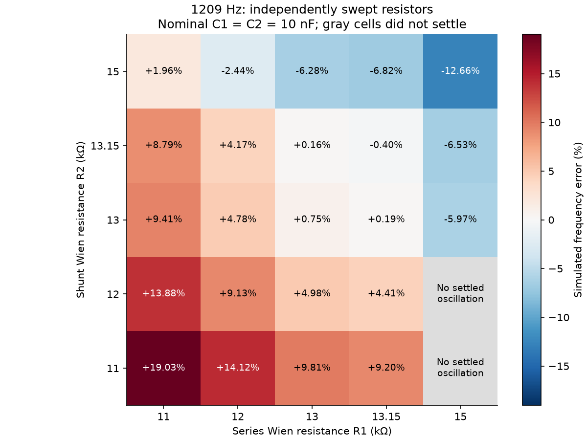
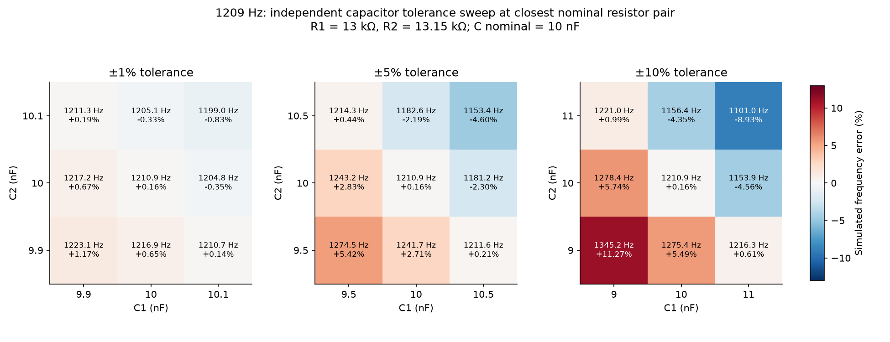

1350 scenario rows; 1250 unique physical circuits. Supplied TL074 model, ±12 V supplies, 10 nF capacitors.
Primary capacitor tolerance ±10%; comparisons ±1% and ±5%. Both Wien resistors and both capacitor deviations vary independently.
Open RESULTS.md for interpretation and limitations. The tolerance table compares all resistor pairs.
Full simulation lookup CSV · Nominal candidate ranking
{
"scenario_rows": 675,
"unique_physical_circuits": 625,
"status_counts": {
"settled_oscillation": 625,
"not_settled_within_run": 2,
"no_sustained_oscillation": 48
},
"simulator_failures": 0,
"best_nominal_any_pair": {
"case_id": "f770_36a2dbd17068",
"R1_ohm": 20680.0,
"R2_ohm": 20680.0,
"R1_parts_ohm": "20000 + 680",
"R2_parts_ohm": "20000 + 680",
"simulated_frequency_hz": 766.2089902806756,
"simulated_abs_error_percent": 0.4923389245875835,
"steady_state_vpp_v": 6.109304784557489,
"thd_2_to_10_percent": 3.8454947797423737,
"settling_time_s": 0.02,
"resistor_count": 4
},
"best_balanced_nominal": {
"case_id": "f770_36a2dbd17068",
"R1_ohm": 20680.0,
"R2_ohm": 20680.0,
"R1_parts_ohm": "20000 + 680",
"R2_parts_ohm": "20000 + 680",
"simulated_frequency_hz": 766.2089902806756,
"simulated_abs_error_percent": 0.4923389245875835,
"steady_state_vpp_v": 6.109304784557489,
"thd_2_to_10_percent": 3.8454947797423737,
"settling_time_s": 0.02,
"resistor_count": 4
}
}



Full simulation lookup CSV · Nominal candidate ranking
{
"scenario_rows": 675,
"unique_physical_circuits": 625,
"status_counts": {
"settled_oscillation": 611,
"no_sustained_oscillation": 63,
"not_settled_within_run": 1
},
"simulator_failures": 0,
"best_nominal_any_pair": {
"case_id": "f1209_8971f008d1ff",
"R1_ohm": 13000.0,
"R2_ohm": 13150.0,
"R1_parts_ohm": "13000",
"R2_parts_ohm": "13000 + 150",
"simulated_frequency_hz": 1210.9205985424105,
"simulated_abs_error_percent": 0.1588584402324662,
"steady_state_vpp_v": 6.297227504007484,
"thd_2_to_10_percent": 3.9126542835460905,
"settling_time_s": 0.02,
"resistor_count": 3
},
"best_balanced_nominal": {
"case_id": "f1209_fc110c6252f2",
"R1_ohm": 13150.0,
"R2_ohm": 13150.0,
"R1_parts_ohm": "13000 + 150",
"R2_parts_ohm": "13000 + 150",
"simulated_frequency_hz": 1204.1731436796708,
"simulated_abs_error_percent": 0.3992436989519579,
"steady_state_vpp_v": 6.1094870292365195,
"thd_2_to_10_percent": 3.8395564799507484,
"settling_time_s": 0.02,
"resistor_count": 4
}
}


